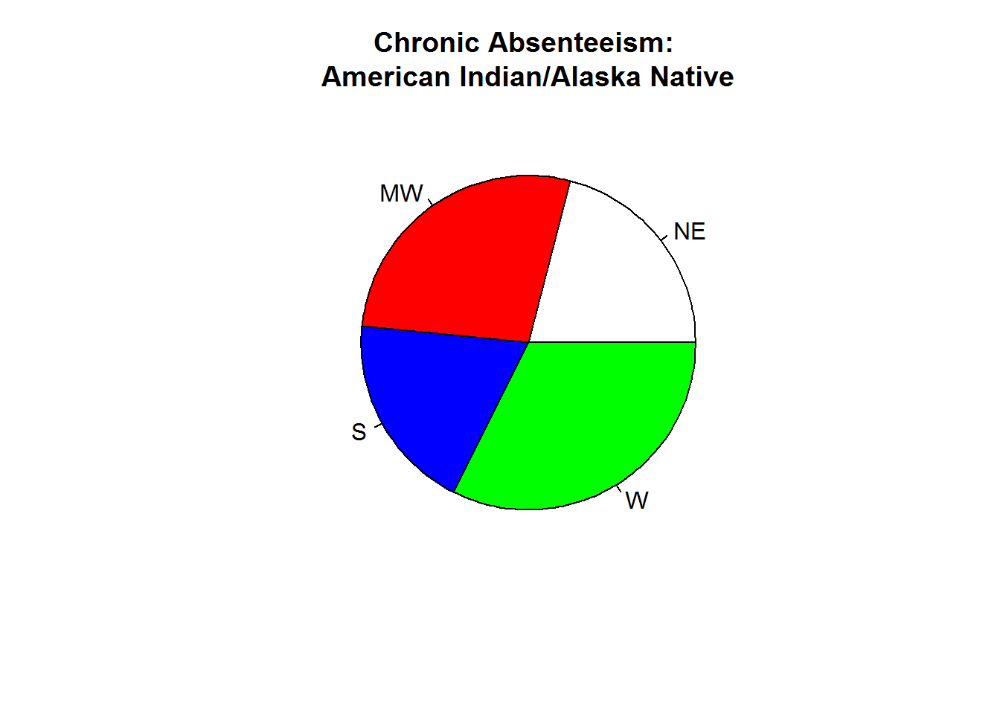
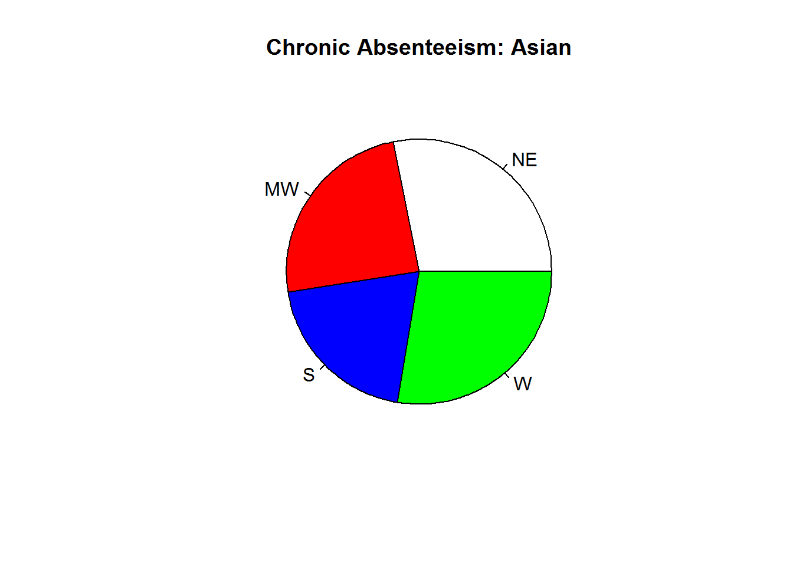
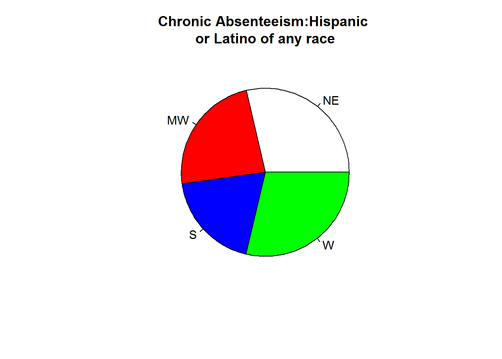
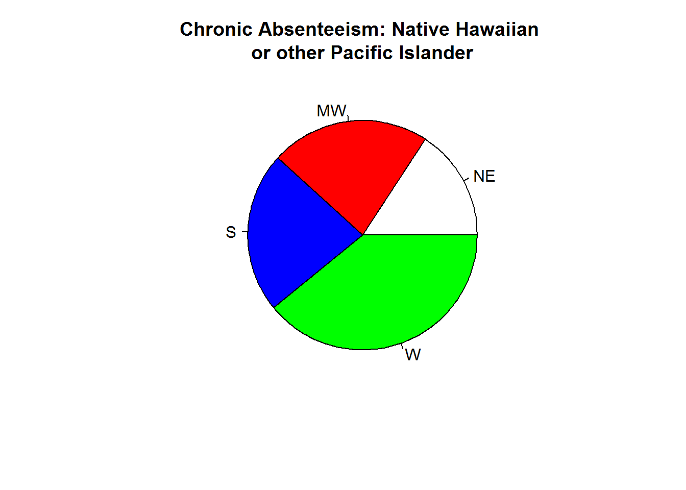
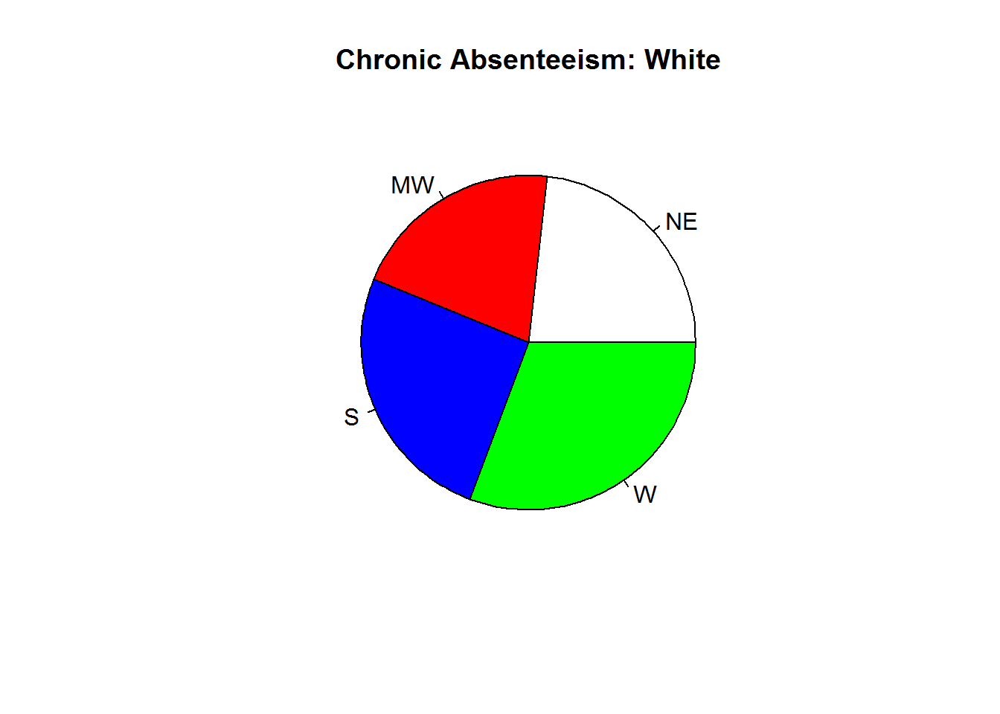

Regression analysis was performed on the independent factor variable of region onto the dependent variable of ethnicity. While there was only one independent variable, separate regressions were performed on each ethncity. In each regression, the reference group was chosen to be the Northeast region. The northeast region was chosen because it is known as the region that is the most econimocally developed, densely populated, and culturally diverse [4],[5]. For the independent variable of each ethncity, proportions were calculated at the aggregate state level: by state, the proportion of students with chronic absenteeism was divided by the total number of students enrolled in that state (by each ethncity group).
Regression analysis yielded the following results for each ethnicity by state, as compared to the reference group of the Northeast region:
In the Northeast, American Indian/Alaskan chronic absenteeism was estimated to be 17.2% (of all American Indian/Alaskan students enrolled in this region). Compared to the Northeast region, chronic absenteeism in the West was statistically significant (p = .002). In the West, American Indian/Alaskan students tended to have chronic absenteeism 9 perecentage points higher than students of this ethnicity group in the Northeast region.

In the Northeast region, Asian chronic absenteeism was estimated to be 9.1% (of all Asian students enrolled in the Northeast region). Compared to the Northeast region, chronic absenteeism was statistically significant for Asians in the South (p = .04). In the South, Asians tended to have chronic absenteeism approximately 3 percentage points lower than Asian students than in the Northeast. 
Hispanic/Latino of any race chronic absenteeism was estimated to be 18.8% in the Northeast (of all enrolled Hispanic/Latino students in the Northeast). Compared to the Northeast region, chronic absenteeism was statistically significant for Hispanics/Latinos in the South (p = .003). In the South, Hispanics and Latinos tended to have chronic absenteeism approximately 6 percentage points lower than those Hispanics/Latinos in the Northeast.

In the Northeast region, black/African American student chronic absenteeism was estimated to be 17.9% (of all black students enrolled in this region). There were no statistically significant differences in any region compared to the Northeast.
In the Northeast, native Hawaiian or other Pacific Islander chronic absenteeism was estimated to be 8.2% (of all Hawaiian/Patcific Islander students enrolled in the Northeast). Compared to the Northeast, chronic absenteeism for this ethnicity group was statistically significant in the West region (p = 4.04e-05). Here, Hawaiian/Pacific Islander chronic absenteeism tended to be approximately 12 percentage points higher than for this ethnicity group than in the Northeast region. 
In the Northeast region, chronic absenteeism for students of two or more races were estimated to be 15.2% (of all students of two or more races enrolled in the Northeast). There were no statistically signfiicant differences for any region compared to the Northeast for chronic absenteeism in students of two or more races.
In the Northeast region, chronic absenteeism for white students were estimated to be 11.8% (of all white students enrolled in the Northeast). Compared to the Northeast, chronic absenteeism for white students was statistically signficant in the West (p = .003). White students tended to have chronic absenteeism approximately 4 percentage points higher in the West than white students in the Northeast. 
In the Northeast, chronic absenteeism over all races/ethncities at the state level aggregate were estimated to be 13.6%. There were no statistically siginificant differences in chronic absenteeism by region at = 0.05 (The West region was statistically signficant at = .1, p = .06).